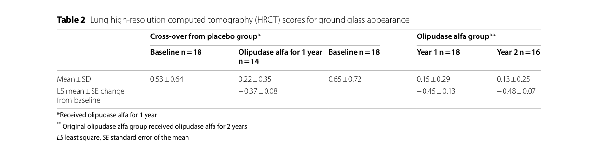

Niemann-Pick disease type B (NPD-B) is the chronic visceral, essentially non-neuronopathic form of acid sphingomyelinase deficiency (ASMD), caused by biallelic SMPD1 variants that leave residual acid sphingomyelinase activity sufficient to spare the CNS in most patients. Lysosomal sphingomyelin accumulation in reticuloendothelial macrophages produces hepatosplenomegaly, thrombocytopenia and other cytopenias, an atherogenic lipid profile, and progressive interstitial lung disease, with survival into adulthood. Enzyme replacement therapy with olipudase alfa is approved and effective for the non-CNS (visceral and pulmonary) manifestations.
Ask a research question about Niemann-Pick Disease Type B. OpenScientist will conduct autonomous deep research using the Disorder Mechanisms Knowledge Base and PubMed literature (typically 10-30 minutes).
Do not include personal health information in your question. Questions and results are cached in your browser's local storage.
Conditions with similar clinical presentations that must be differentiated from Niemann-Pick Disease Type B:
name: Niemann-Pick Disease Type B
creation_date: "2026-06-13T00:00:00Z"
description: >-
Niemann-Pick disease type B (NPD-B) is the chronic visceral, essentially
non-neuronopathic form of acid sphingomyelinase deficiency (ASMD), caused by biallelic
SMPD1 variants that leave residual acid sphingomyelinase activity sufficient to spare
the CNS in most patients. Lysosomal sphingomyelin accumulation in reticuloendothelial
macrophages produces hepatosplenomegaly, thrombocytopenia and other cytopenias, an
atherogenic lipid profile, and progressive interstitial lung disease, with survival
into adulthood. Enzyme replacement therapy with olipudase alfa is approved and
effective for the non-CNS (visceral and pulmonary) manifestations.
category: Mendelian
disease_term:
preferred_term: Niemann-Pick disease type B
term:
id: MONDO:0011871
label: Niemann-Pick disease type B
mappings:
mondo_mappings:
- term:
id: MONDO:0011871
label: Niemann-Pick disease type B
mapping_predicate: skos:exactMatch
mapping_source: MONDO
mapping_justification: Primary MONDO disease identifier for this Niemann-Pick disease type B entry.
synonyms:
- Acid sphingomyelinase deficiency type B
- Chronic visceral ASMD
- ASMD type B
- Niemann-Pick disease, type B
parents:
- sphingolipidosis
pathophysiology:
- name: Residual Acid Sphingomyelinase Activity from SMPD1 Variants
conforms_to: "lysosomal_substrate_accumulation#Lysosomal Hydrolase or Cofactor Deficiency"
description: >-
Biallelic SMPD1 variants reduce but do not abolish acid sphingomyelinase activity. The
residual activity is generally sufficient to spare the CNS, so disease is dominated by
visceral sphingomyelin storage rather than neurodegeneration.
gene:
preferred_term: SMPD1
term:
id: hgnc:11120
label: SMPD1
biological_processes:
- preferred_term: sphingomyelin catabolic process
modifier: DECREASED
term:
id: GO:0006685
label: sphingomyelin catabolic process
evidence:
- reference: PMID:28164782
reference_title: "Types A and B Niemann-Pick disease."
supports: SUPPORT
evidence_source: HUMAN_CLINICAL
snippet: "All patients with types A and B NPD have mutations in the gene encoding ASM (SMPD1), and thus the disease is more accurately referred to as ASM deficiency (ASMD)."
explanation: "SMPD1 mutation and acid sphingomyelinase deficiency underlie NPD type B."
downstream:
- target: Visceral Sphingomyelin Storage in the Reticuloendothelial System
description: Residual-but-insufficient enzyme allows visceral sphingomyelin accumulation.
- name: Visceral Sphingomyelin Storage in the Reticuloendothelial System
conforms_to: "lysosomal_substrate_accumulation#Lysosomal Substrate Accumulation"
description: >-
Sphingomyelin accumulates in macrophages of the spleen, liver, lung, and bone marrow,
forming lipid-laden foam cells. The reticuloendothelial and pulmonary storage burden
drives the visceral manifestations of NPD-B with relative sparing of the CNS.
cell_types:
- preferred_term: macrophage
term:
id: CL:0000235
label: macrophage
cellular_components:
- preferred_term: lysosome
term:
id: GO:0005764
label: lysosome
locations:
- preferred_term: spleen
term:
id: UBERON:0002106
label: spleen
- preferred_term: lung
term:
id: UBERON:0002048
label: lung
evidence:
- reference: PMID:28164782
reference_title: "Types A and B Niemann-Pick disease."
supports: SUPPORT
evidence_source: HUMAN_CLINICAL
snippet: "Type B patients also have hepatosplenomegaly and pathologic alterations of their lungs, but there are usually no CNS signs."
explanation: "Visceral and pulmonary storage with CNS sparing defines NPD-B."
downstream:
- target: Hepatosplenomegaly
description: Reticuloendothelial foam-cell accumulation enlarges liver and spleen.
- target: Interstitial lung disease
description: Pulmonary storage macrophages produce interstitial lung disease.
phenotypes:
- name: Hepatosplenomegaly
description: Enlargement of liver and spleen from sphingomyelin-laden foam cells.
phenotype_term:
preferred_term: Hepatosplenomegaly
term:
id: HP:0001433
label: Hepatosplenomegaly
evidence:
- reference: PMID:28228103
reference_title: "Disease manifestations and burden of illness in patients with acid sphingomyelinase deficiency (ASMD)."
supports: SUPPORT
evidence_source: HUMAN_CLINICAL
snippet: "Almost all patients have hepatosplenomegaly and an atherogenic lipid profile"
explanation: "Hepatosplenomegaly is near-universal in NPD-B."
- name: Thrombocytopenia
description: Cytopenias, especially thrombocytopenia, from hypersplenism and marrow involvement.
phenotype_term:
preferred_term: Thrombocytopenia
term:
id: HP:0001873
label: Thrombocytopenia
evidence:
- reference: PMID:28228103
reference_title: "Disease manifestations and burden of illness in patients with acid sphingomyelinase deficiency (ASMD)."
supports: SUPPORT
evidence_source: HUMAN_CLINICAL
snippet: "hematologic abnormalities including cytopenias"
explanation: "Cytopenias including thrombocytopenia are characteristic."
- name: Interstitial lung disease
description: Progressive interstitial lung disease with impaired diffusion capacity.
phenotype_term:
preferred_term: Interstitial pulmonary abnormality
term:
id: HP:0006530
label: Abnormal pulmonary interstitial morphology
evidence:
- reference: PMID:28228103
reference_title: "Disease manifestations and burden of illness in patients with acid sphingomyelinase deficiency (ASMD)."
supports: SUPPORT
evidence_source: HUMAN_CLINICAL
snippet: "most patients have interstitial lung disease with progressive impairment of pulmonary function"
explanation: "Interstitial lung disease is a major feature of NPD-B."
- name: Atherogenic dyslipidemia
description: An atherogenic lipid profile (elevated LDL/triglycerides, low HDL) is characteristic.
phenotype_term:
preferred_term: Abnormal circulating lipid concentration
term:
id: HP:0003119
label: Abnormal circulating lipid concentration
evidence:
- reference: PMID:28228103
reference_title: "Disease manifestations and burden of illness in patients with acid sphingomyelinase deficiency (ASMD)."
supports: SUPPORT
evidence_source: HUMAN_CLINICAL
snippet: "Almost all patients have hepatosplenomegaly and an atherogenic lipid profile"
explanation: "An atherogenic lipid profile is a near-universal feature."
inheritance:
- name: Autosomal recessive
inheritance_term:
preferred_term: Autosomal recessive inheritance
term:
id: HP:0000007
label: Autosomal recessive inheritance
evidence:
- reference: PMID:37069638
reference_title: "Consensus clinical management guidelines for acid sphingomyelinase deficiency (Niemann-Pick disease types A, B and A/B)."
supports: SUPPORT
evidence_source: HUMAN_CLINICAL
snippet: "Acid Sphingomyelinase Deficiency (ASMD) is a rare autosomal recessive disorder caused by mutations in the SMPD1 gene."
explanation: "ASMD/NPD-B is autosomal recessive."
genetic:
- name: SMPD1
association: Biallelic SMPD1 variants with residual acid sphingomyelinase activity
relationship_type: CAUSATIVE
variant_origin: GERMLINE
gene_term:
preferred_term: SMPD1
term:
id: hgnc:11120
label: SMPD1
evidence:
- reference: PMID:28228103
reference_title: "Disease manifestations and burden of illness in patients with acid sphingomyelinase deficiency (ASMD)."
supports: SUPPORT
evidence_source: HUMAN_CLINICAL
snippet: "Acid sphingomyelinase deficiency (ASMD), a rare lysosomal storage disease, is an autosomal recessive genetic disorder caused by different SMPD1 mutations."
explanation: "SMPD1 mutations cause ASMD; residual activity yields the chronic visceral phenotype."
progression:
- phase: Chronic course with survival into adulthood
notes: >-
Age of onset and rate of progression vary greatly among type B patients; visceral and
pulmonary disease progress gradually and patients frequently live into adulthood.
evidence:
- reference: PMID:28164782
reference_title: "Types A and B Niemann-Pick disease."
supports: SUPPORT
evidence_source: HUMAN_CLINICAL
snippet: "The age of onset and rate of disease progression varies greatly among type B"
explanation: "Type B has a variable, chronic course with survival into adulthood."
diagnosis:
- name: Acid sphingomyelinase enzyme assay
diagnosis_term:
preferred_term: clinical laboratory procedure
term:
id: MAXO:0000006
label: clinical laboratory procedure
description: >-
Demonstration of deficient acid sphingomyelinase activity in leukocytes, fibroblasts,
or dried blood spots; type B typically shows low but detectable residual activity.
markers: Reduced acid sphingomyelinase activity.
evidence:
- reference: PMID:38397448
reference_title: "The Genetic Basis, Lung Involvement, and Therapeutic Options in Niemann-Pick Disease: A Comprehensive Review."
supports: SUPPORT
evidence_source: HUMAN_CLINICAL
snippet: "NPD type A and B are caused by mutations in the gene SMPD1 coding for sphingomyelin phosphodiesterase 1, with a consequent lack of acid sphingomyelinase activity."
explanation: "Deficient acid sphingomyelinase activity is the diagnostic hallmark."
- name: SMPD1 molecular genetic testing
diagnosis_term:
preferred_term: genetic testing
term:
id: MAXO:0000127
label: genetic testing
description: Confirmatory biallelic SMPD1 sequencing.
evidence:
- reference: PMID:37069638
reference_title: "Consensus clinical management guidelines for acid sphingomyelinase deficiency (Niemann-Pick disease types A, B and A/B)."
supports: SUPPORT
evidence_source: HUMAN_CLINICAL
snippet: "Acid Sphingomyelinase Deficiency (ASMD) is a rare autosomal recessive disorder caused by mutations in the SMPD1 gene."
explanation: "SMPD1 sequencing provides molecular confirmation."
differential_diagnoses:
- name: Niemann-Pick disease type A
description: >-
The severe infantile neurovisceral form of ASMD with near-absent enzyme activity and
fatal infantile neurodegeneration.
disease_term:
preferred_term: Niemann-Pick disease type A
term:
id: MONDO:0009756
label: Niemann-Pick disease type A
distinguishing_features:
- Profound, early CNS involvement and death by 2-3 years, versus the chronic CNS-sparing course of type B.
evidence:
- reference: PMID:28164782
reference_title: "Types A and B Niemann-Pick disease."
supports: SUPPORT
evidence_source: HUMAN_CLINICAL
snippet: "Type A NPD patients exhibit hepatosplenomegaly in infancy and profound CNS involvement."
explanation: "Type A has profound infantile CNS involvement, unlike type B."
- name: Gaucher disease
description: >-
Another reticuloendothelial lysosomal storage disorder presenting with
hepatosplenomegaly and cytopenias.
disease_term:
preferred_term: Gaucher disease
term:
id: MONDO:0018150
label: Gaucher disease
distinguishing_features:
- Caused by glucocerebrosidase (GBA) deficiency with glucosylceramide storage and Gaucher cells, not sphingomyelin storage.
evidence:
- reference: PMID:28164782
supports: SUPPORT
evidence_source: HUMAN_CLINICAL
snippet: "The differential diagnosis of types A and B NPD should include Gaucher disease and type C NPD"
explanation: Gaucher disease is an explicit differential diagnosis for types A and B Niemann-Pick disease.
treatments:
- name: Enzyme Replacement Therapy (olipudase alfa)
description: >-
Olipudase alfa (recombinant human acid sphingomyelinase) is the approved
disease-modifying enzyme replacement therapy for the non-CNS manifestations of ASMD,
with sustained improvements in organomegaly and lung function in type B.
therapeutic_modality: PROTEIN_REPLACEMENT
target_mechanisms:
- target: Visceral Sphingomyelin Storage in the Reticuloendothelial System
treatment_effect: RESTORES
description: >-
Olipudase alfa supplies recombinant acid sphingomyelinase that clears the visceral
sphingomyelin storage in the reticuloendothelial system.
treatment_term:
preferred_term: enzyme replacement therapy
term:
id: MAXO:0000933
label: enzyme replacement or supplementation therapy
evidence:
- reference: PMID:38397448
reference_title: "The Genetic Basis, Lung Involvement, and Therapeutic Options in Niemann-Pick Disease: A Comprehensive Review."
supports: SUPPORT
evidence_source: HUMAN_CLINICAL
snippet: "Enzyme replacement therapy with Olipudase α is the first and only approved disease-modifying therapy for patients with ASMD."
explanation: "Olipudase alfa is the approved ERT for the visceral disease of ASMD/NPD-B."
- name: Supportive Care
description: >-
Supportive management of cytopenias, bleeding risk, pulmonary disease, and dyslipidemia
complements enzyme replacement therapy.
treatment_term:
preferred_term: supportive care
term:
id: MAXO:0000950
label: supportive care
evidence:
- reference: PMID:28228103
reference_title: "Disease manifestations and burden of illness in patients with acid sphingomyelinase deficiency (ASMD)."
supports: SUPPORT
evidence_source: HUMAN_CLINICAL
snippet: "limited to symptom management and supportive care"
explanation: "Beyond enzyme replacement, available treatment is limited to symptom management and supportive care."
definitions:
- name: Clinical case definition of Niemann-Pick disease type B
definition_type: CASE_DEFINITION
description: >-
Niemann-Pick disease type B is the chronic visceral, non-neuronopathic form of acid
sphingomyelinase deficiency, defined by biallelic SMPD1 variants with residual enzyme
activity producing hepatosplenomegaly, cytopenias, atherogenic dyslipidemia, and
interstitial lung disease, with survival into adulthood and CNS sparing.
scope: Disease-level case definition for the chronic visceral ASMD subtype.
evidence:
- reference: PMID:28164782
reference_title: "Types A and B Niemann-Pick disease."
supports: SUPPORT
evidence_source: HUMAN_CLINICAL
snippet: "Type B patients also have hepatosplenomegaly and pathologic alterations of their lungs, but there are usually no CNS signs."
explanation: "Anchors the chronic visceral, CNS-sparing case definition."
Niemann–Pick disease type B is the chronic visceral (non–CNS-predominant) phenotype within acid sphingomyelinase deficiency (ASMD), an autosomal recessive lysosomal storage disease caused by biallelic pathogenic variants in SMPD1 encoding lysosomal acid sphingomyelinase (ASM; EC 3.1.4.12). ASM deficiency leads to progressive lysosomal sphingomyelin accumulation and multisystem disease dominated by splenomegaly/hepatomegaly, cytopenias (esp. thrombocytopenia), interstitial lung disease (ILD) with reduced diffusion capacity, and atherogenic dyslipidemia. The treatment landscape changed with approval and real-world implementation of olipudase alfa (recombinant human ASM; Xenpozyme®) for non-CNS manifestations, with large sustained improvements in organomegaly and lung function in adults and children in trials and extensions. (mcgovern2021prospectivestudyof pages 1-2, geberhiwot2023consensusclinicalmanagement pages 1-2, lipinski2024chronicacidsphingomyelinase pages 1-2, wasserstein2023continuedimprovementin pages 1-2)
|---|---|---|---|---|---|---| | Niemann-Pick disease type B; chronic visceral acid sphingomyelinase deficiency (ASMD) (lipinski2024chronicacidsphingomyelinase pages 1-2, lipinski2019chronicvisceralacid pages 1-2) | Acid sphingomyelinase deficiency type B; ASMD type B; chronic visceral ASMD; NPD type B; Niemann–Pick disease type B (mcgovern2021prospectivestudyof pages 1-2, geberhiwot2023consensusclinicalmanagement pages 1-2, pulikottiljacob2023healthcareserviceuse pages 1-2, mauhin2024acidsphingomyelinasedeficiency pages 1-2, lipinski2019chronicvisceralacid pages 1-2) | SMPD1 / sphingomyelin phosphodiesterase 1 (mengel2024aretrospectivestudy pages 1-2, geberhiwot2023consensusclinicalmanagement pages 1-2, lipinski2024chronicacidsphingomyelinase pages 1-2, pulikottiljacob2023healthcareserviceuse pages 1-2, mauhin2024acidsphingomyelinasedeficiency pages 1-2) | Autosomal recessive (geberhiwot2023consensusclinicalmanagement pages 1-2, lipinski2024chronicacidsphingomyelinase pages 1-2, pulikottiljacob2023healthcareserviceuse pages 1-2, mauhin2024acidsphingomyelinasedeficiency pages 1-2) | Disease OMIM: 607616 for NPD type B / chronic visceral ASMD; related disease OMIM: 257200 for type A; gene MIM/OMIM: 607608 for SMPD1 (geberhiwot2023consensusclinicalmanagement pages 1-2, lipinski2024chronicacidsphingomyelinase pages 1-2, lipinski2019chronicvisceralacid pages 1-2) | MONDO_0100464 for acid sphingomyelinase deficiency; disease-target evidence links SMPD1 to ASMD (OpenTargets Search: acid sphingomyelinase deficiency,Niemann-Pick disease type B-SMPD1) | Geberhiwot et al. 2023, doi:10.1186/s13023-023-02686-6, https://doi.org/10.1186/s13023-023-02686-6 (geberhiwot2023consensusclinicalmanagement pages 1-2); Lipiński et al. 2024, doi:10.17219/acem/193696, https://doi.org/10.17219/acem/193696 (lipinski2024chronicacidsphingomyelinase pages 1-2); Lipiński et al. 2019, doi:10.1186/s13023-019-1029-1, https://doi.org/10.1186/s13023-019-1029-1 (lipinski2019chronicvisceralacid pages 1-2); McGovern et al. 2021, doi:10.1186/s13023-021-01842-0, https://doi.org/10.1186/s13023-021-01842-0 (mcgovern2021prospectivestudyof pages 1-2); Mauhin et al. 2024, doi:10.1186/s13023-024-03234-6, https://doi.org/10.1186/s13023-024-03234-6 (mauhin2024acidsphingomyelinasedeficiency pages 1-2) |
Table: This table summarizes the core disease naming, synonyms, genetic basis, inheritance, and identifiers for Niemann-Pick disease type B/chronic visceral ASMD using only retrieved evidence. It is useful as a compact normalization reference for a disease knowledge base entry.
ASMD is a spectrum of disorders historically called Niemann–Pick disease types A and B. Type B corresponds to chronic visceral ASMD (NPD type B) and typically lacks overt neurodegeneration compared with infantile neurovisceral ASMD (type A). (mcgovern2021prospectivestudyof pages 1-2, lipinski2024chronicacidsphingomyelinase pages 1-2, lipinski2019chronicvisceralacid pages 1-2)
Direct abstract quote (definition): “Acid sphingomyelinase deficiency (ASMD)… is a rare and debilitating lysosomal storage disorder.” (mcgovern2021prospectivestudyof pages 1-2)
Commonly used synonyms include ASMD type B, chronic visceral ASMD, and Niemann–Pick disease type B. (mcgovern2021prospectivestudyof pages 1-2, geberhiwot2023consensusclinicalmanagement pages 1-2, pulikottiljacob2023healthcareserviceuse pages 1-2, lipinski2019chronicvisceralacid pages 1-2)
This report is derived from aggregated disease-level resources and cohort/trial studies (guidelines, prospective natural history cohort, retrospective national cohorts, clinical trials, and newborn screening studies). (mcgovern2021prospectivestudyof pages 1-2, geberhiwot2023consensusclinicalmanagement pages 1-2, mauhin2024acidsphingomyelinasedeficiency pages 1-2, wasserstein2023continuedimprovementin pages 1-2, gragnaniello2024newbornscreeningfor pages 1-2)
No strong environmental “risk factors” for disease onset apply in the Mendelian sense; however, clinical burden is shaped by organ complications (lung infections, liver disease), which function as risk modifiers for morbidity and mortality. (mcgovern2021prospectivestudyof pages 1-2, geberhiwot2023consensusclinicalmanagement pages 20-21)
Not established in retrieved clinical evidence. (No relevant evidence in retrieved sources)
Not established in retrieved clinical evidence. (No relevant evidence in retrieved sources)
A standard clinical definition for chronic visceral ASMD includes hepatosplenomegaly, thrombocytopenia, ILD, and dyslipidemia. (mcgovern2021prospectivestudyof pages 1-2)
Direct quote (phenotype definition): “Chronic visceral ASMD (ASMD type B, NPD type B) is characterized by hepatosplenomegaly, thrombocytopenia, interstitial lung disease, and dyslipidemia…” (mcgovern2021prospectivestudyof pages 1-2)
Recent pediatric cohort features (Poland, 2024 update): splenomegaly in all patients (7/7), mild liver enlargement in 4/7, decreased HDL-C in all, hypercholesterolemia in 6/7, and elevated lyso-sphingomyelin in DBS in all screened. (lipinski2024chronicacidsphingomyelinase pages 1-2)
Prospective multinational natural history cohort (n=59; chronic ASMD types B and A/B): * Interstitial lung disease: 66% (39/59) baseline, 78% (25/32) at final visit (4.5–11 years) (mcgovern2021prospectivestudyof pages 1-2) * Splenomegaly: spleen volumes 4–29 multiples of normal; moderate/severe splenomegaly in 86% baseline (mcgovern2021prospectivestudyof pages 1-2) * Mortality: 9/59 deaths (15%) during follow-up; 8 ASMD-related (most commonly pneumonia) (mcgovern2021prospectivestudyof pages 1-2)
Poland type B long-term cohort (n=16): * Splenomegaly: 100% at diagnosis * Hepatomegaly: 88% * Dyslipidemia: 50% * ILD: 44% * Elevated transaminases: 38% * Biomarkers: plasmatic lysosphingomyelin (SPC) elevated in all but one very mild case; SPC-509 used with SPC for course assessment (lipinski2019chronicvisceralacid pages 1-2)
Germany chronic ASMD chart cohort (n=33): * Spleen manifestations 100.0%, liver 93.9%, respiratory 77.4% (mengel2024aretrospectivestudy pages 1-2)
Type B onset ranges from infancy through adulthood with gradual progression of visceral disease and limited neurologic involvement. (mengel2024aretrospectivestudy pages 1-2)
Direct quote (type B course): “Patients with ASMD type B show symptom onset from infancy to adulthood, with gradual progression of visceral manifestations without significant neurodegeneration…” (mengel2024aretrospectivestudy pages 1-2)
Guidelines and observational summaries emphasize substantial burden including respiratory symptoms, fatigue, pain, and psychosocial impacts; quantitative QoL evidence is limited. (mcgovern2017diseasemanifestationsand pages 1-2, geberhiwot2023consensusclinicalmanagement pages 8-9)
Across a recent pediatric cohort, missense variants were the most common lesion type (71% of alleles) in one national series (Poland). (lipinski2024chronicacidsphingomyelinase pages 1-2)
Primary mechanism is loss of enzymatic activity of ASM (variable residual activity across phenotypes), producing lysosomal sphingomyelin storage. (mcgovern2021prospectivestudyof pages 1-2, mauhin2024acidsphingomyelinasedeficiency pages 1-2)
Not established in retrieved clinical evidence for ASMD type B. (No relevant evidence in retrieved sources)
No validated environmental or lifestyle determinants for disease onset are established for this Mendelian disorder in retrieved sources. Management does include prevention/mitigation of secondary complications (e.g., respiratory infections) via vaccination and clinical monitoring. (geberhiwot2023consensusclinicalmanagement pages 20-21)
GO biological process (suggestions): * Lysosomal lipid catabolic process (e.g., GO:0044255 lipid catabolic process; lysosome-associated lipid catabolism) * Sphingomyelin catabolic process (ASM-mediated) * Ceramide biosynthetic process * Macrophage activation / inflammatory response
GO cellular component (suggestions): * Lysosome * Lysosomal lumen
Cell Ontology (CL) (suggestions): * Macrophage CL:0000235 (storage macrophages) * Alveolar macrophage CL:0000583 * Hepatocyte CL:0000182
Key CHEBI entities (suggestions): * Sphingomyelin * Ceramide
These ontology mappings are mechanistically consistent with ASM deficiency and lysosomal sphingomyelin storage described in cohort and guideline sources. (mengel2024aretrospectivestudy pages 1-2, mcgovern2021prospectivestudyof pages 1-2)
UBERON suggestions: spleen (UBERON:0002106), liver (UBERON:0002107), lung (UBERON:0002048)
Storage-laden macrophages in reticuloendothelial organs and the lung are central to pathology (CL: macrophage, alveolar macrophage). (mcgovern2017diseasemanifestationsand pages 1-2, mcgovern2021prospectivestudyof pages 1-2)
Lysosomal storage (GO cellular component: lysosome). (mcgovern2021prospectivestudyof pages 1-2)
Type B: symptom onset from infancy to adulthood. (mengel2024aretrospectivestudy pages 1-2)
Slowly progressive multisystem disease; longitudinal worsening seen in splenomegaly, hepatomegaly, ILD/DLCO, and dyslipidemia. (mcgovern2021prospectivestudyof pages 1-2)
Autosomal recessive. (geberhiwot2023consensusclinicalmanagement pages 1-2, mauhin2024acidsphingomyelinasedeficiency pages 1-2)
France (retrospective survival study; 2024, Orphanet J Rare Dis): * Type B median age at diagnosis: 5.5 years (range 0–73) * Type B deaths: 10/94 (10.6%); median age at death 57.6 years (range 3.4–74.1) * Type B SMR: 3.5 (95% CI 1.6–5.9) (mauhin2024acidsphingomyelinasedeficiency pages 3-5, mauhin2024acidsphingomyelinasedeficiency pages 1-2)
Germany (retrospective cohort; 2024, Orphanet J Rare Dis): * Median age at diagnosis (type B): 8.0 years (IQR 3.0–20.0) * SMR (chronic ASMD overall): 21.6 (95% CI 9.8–38.0) * Median overall survival since birth: 45.4 years (95% CI 17.5–65.0) * Type B median age at death (among deaths): 31.0 years (IQR 11.0–55.0) * Organ involvement in cohort: spleen 100.0%, liver 93.9%, respiratory 77.4% (mengel2024aretrospectivestudy pages 1-2)
Prospective natural history (multinational; 2021): 15% mortality over 4.5–11 years, and severe splenomegaly/splenectomy strongly associated with death (OR 10.29). (mcgovern2021prospectivestudyof pages 1-2)
|---|---|---|---|---|---| | Epidemiology / natural history | McGovern et al. (2021) (mcgovern2021prospectivestudyof pages 1-2) | 59 patients; chronic ASMD types A/B and B; age 7-64 y; 31 male/28 female (mcgovern2021prospectivestudyof pages 1-2) | Prospective, multicenter, multinational longitudinal natural history study; follow-up 4.5-11 years (mcgovern2021prospectivestudyof pages 1-2) | ILD in 66% (39/59) at baseline and 78% (25/32) at final visit; spleen volumes 4-29 multiples of normal; moderate/severe splenomegaly in 86% baseline, 83% year 1, 90% final; median % predicted DLCO decreased by >10%; 9/59 deaths (15%), 8 ASMD-related, most commonly pneumonia; severe splenomegaly or prior splenectomy associated with mortality (OR 10.29, 95% CI 1.7-62.7) (mcgovern2021prospectivestudyof pages 1-2) | https://doi.org/10.1186/s13023-021-01842-0 | | Epidemiology / natural history | Mengel et al. (2024) (mengel2024aretrospectivestudy pages 1-2) | 33 chart records; 24 type B, 9 type A/B (mengel2024aretrospectivestudy pages 1-2) | Retrospective multicenter German cohort, 1990-2021 (mengel2024aretrospectivestudy pages 1-2) | Manifestations: spleen 100.0%, liver 93.9%, respiratory 77.4%; median age at diagnosis 8.0 y (IQR 3.0-20.0) for type B and 1.0 y (1.0-2.0) for type A/B; 9 deaths, all ASMD-related; median age at death 31.0 y for type B and 9.0 y for type A/B; median overall survival 45.4 y (95% CI 17.5-65.0); SMR 21.6 (95% CI 9.8-38.0) (mengel2024aretrospectivestudy pages 1-2) | https://doi.org/10.1186/s13023-024-03174-1 | | Epidemiology / natural history | Mauhin et al. (2024) (mauhin2024acidsphingomyelinasedeficiency pages 1-2, mauhin2024acidsphingomyelinasedeficiency pages 3-5) | 118 ASMD records total; 94 type B, 15 type A, 9 type A/B (mauhin2024acidsphingomyelinasedeficiency pages 1-2, mauhin2024acidsphingomyelinasedeficiency pages 3-5) | Retrospective multicenter French survival study, 1990-2020 (mauhin2024acidsphingomyelinasedeficiency pages 1-2, mauhin2024acidsphingomyelinasedeficiency pages 3-5) | For type B: estimated birth prevalence in France ~1/230,000 births; median age at diagnosis 5.5 y (range 0-73); 10/94 deaths (10.6%); median age at death 57.6 y (range 3.4-74.1); SMR 3.5 (95% CI 1.6-5.9); type-B deaths mostly adults; cancer accounted for 5/10 type-B deaths in one detailed breakdown (mauhin2024acidsphingomyelinasedeficiency pages 3-5, mauhin2024acidsphingomyelinasedeficiency pages 1-2) | https://doi.org/10.1186/s13023-024-03234-6 | | Epidemiology / natural history | Pulikottil-Jacob et al. (2023) (pulikottiljacob2023healthcareserviceuse pages 1-2) | 47 patients in primary claims cohort; 59 in sensitivity cohort; ASMD type B/high-probability type B (pulikottiljacob2023healthcareserviceuse pages 1-2) | Retrospective US claims analysis using IQVIA Open Claims, 2010-2019 (pulikottiljacob2023healthcareserviceuse pages 1-2) | 70% of primary cohort aged <18 y; liver, spleen, and lungs were the most frequently affected organs; respiratory/lung disorders drove most ED visits and hospitalizations; demonstrates high healthcare-service use in real-world practice (pulikottiljacob2023healthcareserviceuse pages 1-2) | https://doi.org/10.1007/s12325-023-02453-w | | Olipudase alfa clinical outcomes | Wasserstein et al. (2023) ASCEND open-label extension (wasserstein2023continuedimprovementin pages 1-2, wasserstein2023continuedimprovementin pages 9-11) | 35 adults with chronic ASMD (type B and A/B) continued/crossed over after ASCEND; 33 completed year 2 (wasserstein2023continuedimprovementin pages 1-2, wasserstein2023continuedimprovementin pages 9-11) | Open-label extension of randomized placebo-controlled ASCEND adult trial; NCT02004691 (wasserstein2023continuedimprovementin pages 1-2) | Cross-over group after 1 year: DLCO +28.0 ± 6.2%, spleen volume -36.0 ± 3.0%, liver volume -30.7 ± 2.5%; continuous olipudase alfa for 2 years: DLCO +28.5 ± 6.2%, spleen -47.0 ± 2.7%, liver -33.4 ± 2.2%; lipid profiles and elevated transaminases improved/normalized and remained stable; 99% of TEAEs mild/moderate; one treatment-related serious AE (extrasystoles); no discontinuations due to AEs (wasserstein2023continuedimprovementin pages 1-2, wasserstein2023continuedimprovementin pages 9-11) | https://doi.org/10.1186/s13023-023-02983-0 | | Olipudase alfa clinical outcomes | Diaz et al. (2022) ASCEND-Peds 2-year results (diaz2022longtermsafetyand pages 1-2, diaz2022longtermsafetyand pages 2-4) | 20 pediatric patients; chronic ASMD types B or A/B; 4 adolescents, 9 children, 7 infants/early child (diaz2022longtermsafetyand pages 1-2, diaz2022longtermsafetyand pages 2-4) | Pediatric clinical trial plus long-term continuation; completed ASCEND-Peds (NCT02292654) and continued in NCT02004704 (diaz2022longtermsafetyand pages 1-2, diaz2022longtermsafetyand pages 2-4) | Mean reductions from baseline at 2 years: spleen volume -61%, liver volume -49% (p<0.0001); mean % predicted DLCO +46.6% (p<0.0001) in 9 evaluable patients; mean height Z-score +1.17 (p<0.0001); no discontinuations; 99% of AEs mild/moderate; one patient had 2 treatment-related serious hypersensitivity events that resolved (diaz2022longtermsafetyand pages 1-2, diaz2022longtermsafetyand pages 2-4) | https://doi.org/10.1186/s13023-022-02587-0 | | Olipudase alfa clinical outcomes | Lachmann et al. (2023) long-term adult study (wasserstein2018olipudasealfafor pages 1-2) | 5 adults with chronic ASMD (wasserstein2018olipudasealfafor pages 1-2) | Open-label long-term study; 30-month results from NCT02004704 (wasserstein2018olipudasealfafor pages 1-2) | Liver volume -31%, spleen volume -39%, mean DLCO +35% at 30 months; lipid profiles improved in all patients; no deaths, serious or severe events, or discontinuations; no anti-drug antibodies detected (wasserstein2018olipudasealfafor pages 1-2) | https://doi.org/10.1007/s10545-017-0123-6 | | Olipudase alfa clinical outcomes | Syed (2023) drug profile summarizing ASCEND/ASCEND-Peds (syed2023olipudasealfain pages 4-5) | Adults in ASCEND and pediatric patients in ASCEND-Peds (numbers not restated in excerpt) (syed2023olipudasealfain pages 4-5) | Narrative drug profile/review of trial evidence (syed2023olipudasealfain pages 4-5) | Adults at week 52: 27.7% on olipudase alfa had ≥15% absolute DLCO increase vs 0% placebo; 94.4% had ≥30% spleen-volume reduction vs 0% placebo; FVC +6.76% vs +1.48%; ALT -36.5% vs -0.98%; AST -31.6% vs +2.0%; total bilirubin -29.9% vs +12.5%; anti-atherogenic lipids increased and pro-atherogenic lipids decreased (syed2023olipudasealfain pages 4-5) | https://doi.org/10.1007/s40261-023-01270-x |
Table: This table compiles the main quantitative epidemiology/natural-history studies and the pivotal olipudase alfa outcome studies for chronic ASMD type B/A-B. It is useful for quickly comparing disease burden, survival, and treatment effects across recent authoritative sources.
Guidelines emphasize that hepatosplenomegaly and cytopenias overlap with Gaucher disease and other conditions; clinicians should evaluate concurrent differentials and proceed to ASM enzyme testing when ASMD is suspected. (geberhiwot2023consensusclinicalmanagement pages 8-9, mcgovern2017consensusrecommendationfor pages 3-4)
Consensus diagnostic guideline (Genetics in Medicine, 2017): * First test: ASM enzyme assay; SMPD1 sequencing after biochemical confirmation (mcgovern2017consensusrecommendationfor pages 3-4) * Preferred analytic method: tandem mass spectrometry (MS/MS) over fluorometry due to false negatives in some contexts (e.g., p.Q294K) (mcgovern2017consensusrecommendationfor pages 3-4) * Sample types: leukocytes, cultured fibroblasts, DBS; fibroblasts useful to confirm equivocal results (mcgovern2017consensusrecommendationfor pages 3-4)
Operational cutoffs used in a 2024 cohort study: ASMD diagnosis based on low ASM activity <10% (study inclusion/diagnostic criterion). (mengel2024aretrospectivestudy pages 1-2)
Direct quote (first-tier screening proposition): in one pediatric update, “Both acid spingomyelinase activity and lyso-spingomyelin concentration in DBS should be regarded as a first-tier screening method into ASMD.” (lipinski2024chronicacidsphingomyelinase pages 1-2)
Natural history and treatment trials use: * High-resolution chest CT (HRCT) for ILD/ground-glass opacities * Pulmonary function tests including DLCO as key endpoints (mcgovern2021prospectivestudyof pages 1-2, wasserstein2023continuedimprovementin pages 1-2)
Italy expanded NBS feasibility (Dec 2024; Int J Neonatal Screening): * Screened 275,011 newborns (2015–2024) * First-tier: ASM activity on DBS via MS/MS * Second-tier: LysoSM quantification and SMPD1 sequencing * Incidence 1 in 137,506; PPV 100% reported in the study summary (gragnaniello2024newbornscreeningfor pages 1-2) * Example second-tier cutoff in this program: LysoSM >51.68 nmol/L considered abnormal (gragnaniello2024newbornscreeningfor pages 3-5)
France and Germany national cohorts (2024) show elevated mortality versus general population (SMR 3.5 in French type B; SMR 21.6 in German chronic ASMD cohort) with cause-of-death patterns including respiratory and liver disease and, in some type B series, cancers. (mauhin2024acidsphingomyelinasedeficiency pages 3-5, mauhin2024acidsphingomyelinasedeficiency pages 1-2, mengel2024aretrospectivestudy pages 1-2)
In an 11-year prospective natural history study, severe splenomegaly or prior splenectomy was associated with markedly higher mortality risk (OR 10.29). (mcgovern2021prospectivestudyof pages 1-2)
Olipudase alfa is a recombinant human ASM enzyme replacement therapy for non-CNS manifestations of ASMD. (wasserstein2023continuedimprovementin pages 1-2)
ASCEND adult open-label extension (Orphanet J Rare Dis, Dec 2023; NCT02004691): * DLCO: +28.0 ± 6.2% (cross-over group after 1 year) and +28.5 ± 6.2% (continuous-treatment group after 2 years) * Spleen volume: −36.0 ± 3.0% (cross-over 1 year), −47.0 ± 2.7% (2 years) * Liver volume: −30.7 ± 2.5% (cross-over 1 year), −33.4 ± 2.2% (2 years) * Safety: 99% TEAEs mild/moderate; 1 treatment-related serious AE (extrasystoles); no discontinuations for AEs (wasserstein2023continuedimprovementin pages 1-2)
Visual evidence from this study (HRCT/organ/lung endpoints) is available in the retrieved table/figures. (wasserstein2023continuedimprovementin media e0b00a30, wasserstein2023continuedimprovementin media 84e619b3, wasserstein2023continuedimprovementin media 3d663125, wasserstein2023continuedimprovementin media 3a33f2b4)
Two-year pediatric outcomes (Orphanet J Rare Dis, Dec 2022; NCT02292654 → NCT02004704): * Mean spleen volume reduction: −61% * Mean liver volume reduction: −49% * Mean % predicted DLCO increase: +46.6% (in 9 evaluable patients) * Growth: mean height Z-score change +1.17 * Safety: 99% AEs mild/moderate; no discontinuations; one patient had two serious hypersensitivity events that resolved (diaz2022longtermsafetyand pages 1-2)
In adult extension data, baseline plasma lyso-sphingomyelin was markedly elevated (ULN 10 μg/L) and “pre-infusion levels steadily decreased and stabilized after 6 months” on therapy. (wasserstein2023continuedimprovementin pages 6-9)
The 2023 international consensus management guidelines stress multidisciplinary care and recommend: * Close monitoring of liver disease; avoid splenectomy where possible due to risk of worsening disease (geberhiwot2023consensusclinicalmanagement pages 20-21) * Vigilance for respiratory infections; encourage vaccination (influenza, COVID-19, pneumococcal) (geberhiwot2023consensusclinicalmanagement pages 20-21) * Hematology evaluation for severe thrombocytopenia/bleeding; management individualized (geberhiwot2023consensusclinicalmanagement pages 20-21)
Gene therapy approaches are being explored broadly across sphingolipidoses, but no ASMD type B gene therapy clinical outcomes were identified within the retrieved clinical evidence set. (vlad2025fromgenesto pages 19-21)
Not applicable in the conventional infectious/environmental sense for a Mendelian disorder.
Consensus management guidelines explicitly recommend access to a genetic counsellor to discuss recurrence risk and prenatal diagnosis options for families. (geberhiwot2023consensusclinicalmanagement pages 14-15)
A naturally occurring SMPD1-associated Niemann–Pick-like disease is reported in cats, including a nonsense SMPD1 mutation in a kitten with neurodegenerative and visceral storage pathology (analogous to human type A). ()
ASM knockout (Smpd1−/−) mice show progressive lipid accumulation (sphingomyelin as principal lipid) in reticuloendothelial organs and brain; these models are used for mechanistic studies and therapeutic testing. (schuchman2007thepathogenesisand pages 2-4, schuchman2017typesaand pages 6-8)
Mutation-specific transgenic mice expressing human SMPD1 mutations (R496L, ΔR608) on an ASMKO background were generated to support evaluation of enzyme enhancement strategies and to model residual activity in specific alleles. (jones2008characterizationofcommon pages 1-2)
Zebrafish smpd1 deficiency has been used as a genetic modifier background in sphingolipidosis models (e.g., psap knockout) to assess survival and mechanistic rescue, supporting SMPD1 as a modifiable node in sphingolipid pathology. (zhang2023azebrafishmodel pages 13-15)
References
(mcgovern2021prospectivestudyof pages 1-2): Margaret M. McGovern, Melissa P. Wasserstein, Bruno Bembi, Roberto Giugliani, K. Eugen Mengel, Marie T. Vanier, Qi Zhang, and M. Judith Peterschmitt. Prospective study of the natural history of chronic acid sphingomyelinase deficiency in children and adults: eleven years of observation. Orphanet Journal of Rare Diseases, May 2021. URL: https://doi.org/10.1186/s13023-021-01842-0, doi:10.1186/s13023-021-01842-0. This article has 62 citations and is from a peer-reviewed journal.
(geberhiwot2023consensusclinicalmanagement pages 1-2): Tarekegn Geberhiwot, Melissa Wasserstein, Subadra Wanninayake, Shaun Christopher Bolton, Andrea Dardis, Anna Lehman, Olivier Lidove, Charlotte Dawson, Roberto Giugliani, Jackie Imrie, Justin Hopkin, James Green, Daniel de Vicente Corbeira, Shyam Madathil, Eugen Mengel, Fatih Ezgü, Magali Pettazzoni, Barbara Sjouke, Carla Hollak, Marie T. Vanier, Margaret McGovern, and Edward Schuchman. Consensus clinical management guidelines for acid sphingomyelinase deficiency (niemann–pick disease types a, b and a/b). Orphanet Journal of Rare Diseases, Apr 2023. URL: https://doi.org/10.1186/s13023-023-02686-6, doi:10.1186/s13023-023-02686-6. This article has 105 citations and is from a peer-reviewed journal.
(lipinski2024chronicacidsphingomyelinase pages 1-2): Patryk Lipiński, Agnieszka Ługowska, and Anna Tylki-Szymańska. Chronic acid sphingomyelinase deficiency diagnosed in infancy/childhood in polish patients: 2024 update. Advances in clinical and experimental medicine : official organ Wroclaw Medical University, 33:1163-1168, Oct 2024. URL: https://doi.org/10.17219/acem/193696, doi:10.17219/acem/193696. This article has 1 citations.
(wasserstein2023continuedimprovementin pages 1-2): Melissa P. Wasserstein, Robin Lachmann, Carla Hollak, Antonio Barbato, Renata C. Gallagher, Roberto Giugliani, Norberto Bernardo Guelbert, Julia B. Hennermann, Takayuki Ikezoe, Olivier Lidove, Paulina Mabe, Eugen Mengel, Maurizio Scarpa, Ebubekir Senates, Michel Tchan, Jesus Villarrubia, Beth L. Thurberg, Abhimanyu Yarramaneni, Nicole M. Armstrong, Yong Kim, and Monica Kumar. Continued improvement in disease manifestations of acid sphingomyelinase deficiency for adults with up to 2 years of olipudase alfa treatment: open-label extension of the ascend trial. Orphanet Journal of Rare Diseases, Dec 2023. URL: https://doi.org/10.1186/s13023-023-02983-0, doi:10.1186/s13023-023-02983-0. This article has 27 citations and is from a peer-reviewed journal.
(lipinski2019chronicvisceralacid pages 1-2): Patryk Lipiński, Ladislav Kuchar, Ekaterina Y. Zakharova, Galina V. Baydakova, Agnieszka Ługowska, and Anna Tylki-Szymańska. Chronic visceral acid sphingomyelinase deficiency (niemann-pick disease type b) in 16 polish patients: long-term follow-up. Orphanet Journal of Rare Diseases, Feb 2019. URL: https://doi.org/10.1186/s13023-019-1029-1, doi:10.1186/s13023-019-1029-1. This article has 46 citations and is from a peer-reviewed journal.
(pulikottiljacob2023healthcareserviceuse pages 1-2): Ruth Pulikottil-Jacob, Michael L. Ganz, Marie Fournier, and Natalia Petruski-Ivleva. Healthcare service use patterns among patients with acid sphingomyelinase deficiency type b: a retrospective us claims analysis. Advances in Therapy, 40:2234-2248, Mar 2023. URL: https://doi.org/10.1007/s12325-023-02453-w, doi:10.1007/s12325-023-02453-w. This article has 8 citations and is from a peer-reviewed journal.
(mauhin2024acidsphingomyelinasedeficiency pages 1-2): Wladimir Mauhin, Nathalie Guffon, Marie T. Vanier, Roseline Froissart, Aline Cano, Claire Douillard, Christian Lavigne, Bénédicte Héron, Nadia Belmatoug, Yurdagül Uzunhan, Didier Lacombe, Thierry Levade, Aymeric Duvivier, Ruth Pulikottil-Jacob, Fernando Laredo, Samia Pichard, Olivier Lidove, Marie-Thérèse Abi-Wardé, Marc Berger, Emilie Berthoux, Aurélie Cabannes-Hamy, Fabrice Camou, Pascal Cathebras, Vincent Grobost, Jérémy Keraen, Alice Kuster, Bertrand Lioger, Anas Mehdaoui, Claire Merlot, Martin Michaud, Martine-Louise Reynaud-Gaubert, Fréderic Schlemmer, Amélie Servettaz, Chloé Stavris, and Sébastien Trouillier. Acid sphingomyelinase deficiency in france: a retrospective survival study. Orphanet Journal of Rare Diseases, Aug 2024. URL: https://doi.org/10.1186/s13023-024-03234-6, doi:10.1186/s13023-024-03234-6. This article has 10 citations and is from a peer-reviewed journal.
(mengel2024aretrospectivestudy pages 1-2): Eugen Mengel, Nicole Muschol, Natalie Weinhold, Athanasia Ziagaki, Julia Neugebauer, Benno Antoni, Laura Langer, Maja Gasparic, Sophie Guillonneau, Marie Fournier, Fernando Laredo, and Ruth Pulikottil-Jacob. A retrospective study of morbidity and mortality of chronic acid sphingomyelinase deficiency in germany. Orphanet Journal of Rare Diseases, Apr 2024. URL: https://doi.org/10.1186/s13023-024-03174-1, doi:10.1186/s13023-024-03174-1. This article has 10 citations and is from a peer-reviewed journal.
(OpenTargets Search: acid sphingomyelinase deficiency,Niemann-Pick disease type B-SMPD1): Open Targets Query (acid sphingomyelinase deficiency,Niemann-Pick disease type B-SMPD1, 5 results). Buniello, A. et al. (2025). Open Targets Platform: facilitating therapeutic hypotheses building in drug discovery. Nucleic Acids Research.
(gragnaniello2024newbornscreeningfor pages 1-2): Vincenza Gragnaniello, Chiara Cazzorla, Daniela Gueraldi, Christian Loro, Elena Porcù, Leonardo Salviati, Alessandro P. Burlina, and Alberto B. Burlina. Newborn screening for acid sphingomyelinase deficiency: prevalence and genotypic findings in italy. International Journal of Neonatal Screening, 10:79, Dec 2024. URL: https://doi.org/10.3390/ijns10040079, doi:10.3390/ijns10040079. This article has 4 citations.
(geberhiwot2023consensusclinicalmanagement pages 20-21): Tarekegn Geberhiwot, Melissa Wasserstein, Subadra Wanninayake, Shaun Christopher Bolton, Andrea Dardis, Anna Lehman, Olivier Lidove, Charlotte Dawson, Roberto Giugliani, Jackie Imrie, Justin Hopkin, James Green, Daniel de Vicente Corbeira, Shyam Madathil, Eugen Mengel, Fatih Ezgü, Magali Pettazzoni, Barbara Sjouke, Carla Hollak, Marie T. Vanier, Margaret McGovern, and Edward Schuchman. Consensus clinical management guidelines for acid sphingomyelinase deficiency (niemann–pick disease types a, b and a/b). Orphanet Journal of Rare Diseases, Apr 2023. URL: https://doi.org/10.1186/s13023-023-02686-6, doi:10.1186/s13023-023-02686-6. This article has 105 citations and is from a peer-reviewed journal.
(mcgovern2017diseasemanifestationsand pages 1-2): Margaret M. McGovern, Ruzan Avetisyan, Bernd-Jan Sanson, and Olivier Lidove. Disease manifestations and burden of illness in patients with acid sphingomyelinase deficiency (asmd). Orphanet Journal of Rare Diseases, Feb 2017. URL: https://doi.org/10.1186/s13023-017-0572-x, doi:10.1186/s13023-017-0572-x. This article has 220 citations and is from a peer-reviewed journal.
(geberhiwot2023consensusclinicalmanagement pages 8-9): Tarekegn Geberhiwot, Melissa Wasserstein, Subadra Wanninayake, Shaun Christopher Bolton, Andrea Dardis, Anna Lehman, Olivier Lidove, Charlotte Dawson, Roberto Giugliani, Jackie Imrie, Justin Hopkin, James Green, Daniel de Vicente Corbeira, Shyam Madathil, Eugen Mengel, Fatih Ezgü, Magali Pettazzoni, Barbara Sjouke, Carla Hollak, Marie T. Vanier, Margaret McGovern, and Edward Schuchman. Consensus clinical management guidelines for acid sphingomyelinase deficiency (niemann–pick disease types a, b and a/b). Orphanet Journal of Rare Diseases, Apr 2023. URL: https://doi.org/10.1186/s13023-023-02686-6, doi:10.1186/s13023-023-02686-6. This article has 105 citations and is from a peer-reviewed journal.
(mauhin2024acidsphingomyelinasedeficiency pages 3-5): Wladimir Mauhin, Nathalie Guffon, Marie T. Vanier, Roseline Froissart, Aline Cano, Claire Douillard, Christian Lavigne, Bénédicte Héron, Nadia Belmatoug, Yurdagül Uzunhan, Didier Lacombe, Thierry Levade, Aymeric Duvivier, Ruth Pulikottil-Jacob, Fernando Laredo, Samia Pichard, Olivier Lidove, Marie-Thérèse Abi-Wardé, Marc Berger, Emilie Berthoux, Aurélie Cabannes-Hamy, Fabrice Camou, Pascal Cathebras, Vincent Grobost, Jérémy Keraen, Alice Kuster, Bertrand Lioger, Anas Mehdaoui, Claire Merlot, Martin Michaud, Martine-Louise Reynaud-Gaubert, Fréderic Schlemmer, Amélie Servettaz, Chloé Stavris, and Sébastien Trouillier. Acid sphingomyelinase deficiency in france: a retrospective survival study. Orphanet Journal of Rare Diseases, Aug 2024. URL: https://doi.org/10.1186/s13023-024-03234-6, doi:10.1186/s13023-024-03234-6. This article has 10 citations and is from a peer-reviewed journal.
(wasserstein2023continuedimprovementin pages 9-11): Melissa P. Wasserstein, Robin Lachmann, Carla Hollak, Antonio Barbato, Renata C. Gallagher, Roberto Giugliani, Norberto Bernardo Guelbert, Julia B. Hennermann, Takayuki Ikezoe, Olivier Lidove, Paulina Mabe, Eugen Mengel, Maurizio Scarpa, Ebubekir Senates, Michel Tchan, Jesus Villarrubia, Beth L. Thurberg, Abhimanyu Yarramaneni, Nicole M. Armstrong, Yong Kim, and Monica Kumar. Continued improvement in disease manifestations of acid sphingomyelinase deficiency for adults with up to 2 years of olipudase alfa treatment: open-label extension of the ascend trial. Orphanet Journal of Rare Diseases, Dec 2023. URL: https://doi.org/10.1186/s13023-023-02983-0, doi:10.1186/s13023-023-02983-0. This article has 27 citations and is from a peer-reviewed journal.
(diaz2022longtermsafetyand pages 1-2): George A. Diaz, Roberto Giugliani, Nathalie Guffon, Simon A. Jones, Eugen Mengel, Maurizio Scarpa, Peter Witters, Abhimanyu Yarramaneni, Jing Li, Nicole M. Armstrong, Yong Kim, Catherine Ortemann-Renon, and Monica Kumar. Long-term safety and clinical outcomes of olipudase alfa enzyme replacement therapy in pediatric patients with acid sphingomyelinase deficiency: two-year results. Orphanet Journal of Rare Diseases, Dec 2022. URL: https://doi.org/10.1186/s13023-022-02587-0, doi:10.1186/s13023-022-02587-0. This article has 61 citations and is from a peer-reviewed journal.
(diaz2022longtermsafetyand pages 2-4): George A. Diaz, Roberto Giugliani, Nathalie Guffon, Simon A. Jones, Eugen Mengel, Maurizio Scarpa, Peter Witters, Abhimanyu Yarramaneni, Jing Li, Nicole M. Armstrong, Yong Kim, Catherine Ortemann-Renon, and Monica Kumar. Long-term safety and clinical outcomes of olipudase alfa enzyme replacement therapy in pediatric patients with acid sphingomyelinase deficiency: two-year results. Orphanet Journal of Rare Diseases, Dec 2022. URL: https://doi.org/10.1186/s13023-022-02587-0, doi:10.1186/s13023-022-02587-0. This article has 61 citations and is from a peer-reviewed journal.
(wasserstein2018olipudasealfafor pages 1-2): Melissa P. Wasserstein, George A. Diaz, Robin H. Lachmann, Marie‐Hélène Jouvin, Indrani Nandy, Allena J. Ji, and Ana Cristina Puga. Olipudase alfa for treatment of acid sphingomyelinase deficiency (asmd): safety and efficacy in adults treated for 30 months. Journal of Inherited Metabolic Disease, 41:829-838, Jan 2018. URL: https://doi.org/10.1007/s10545-017-0123-6, doi:10.1007/s10545-017-0123-6. This article has 130 citations and is from a peer-reviewed journal.
(syed2023olipudasealfain pages 4-5): Yahiya Y. Syed. Olipudase alfa in non-cns manifestations of acid sphingomyelinase deficiency: a profile of its use. Clinical Drug Investigation, 43:369-377, May 2023. URL: https://doi.org/10.1007/s40261-023-01270-x, doi:10.1007/s40261-023-01270-x. This article has 15 citations and is from a peer-reviewed journal.
(mcgovern2017consensusrecommendationfor pages 3-4): Margaret M. McGovern, Carlo Dionisi-Vici, Roberto Giugliani, Paul Hwu, Olivier Lidove, Zoltan Lukacs, Karl Eugen Mengel, Pramod K. Mistry, Edward H. Schuchman, and Melissa P. Wasserstein. Consensus recommendation for a diagnostic guideline for acid sphingomyelinase deficiency. Genetics in Medicine, 19:967-974, Sep 2017. URL: https://doi.org/10.1038/gim.2017.7, doi:10.1038/gim.2017.7. This article has 142 citations and is from a highest quality peer-reviewed journal.
(wasserstein2023continuedimprovementin pages 6-9): Melissa P. Wasserstein, Robin Lachmann, Carla Hollak, Antonio Barbato, Renata C. Gallagher, Roberto Giugliani, Norberto Bernardo Guelbert, Julia B. Hennermann, Takayuki Ikezoe, Olivier Lidove, Paulina Mabe, Eugen Mengel, Maurizio Scarpa, Ebubekir Senates, Michel Tchan, Jesus Villarrubia, Beth L. Thurberg, Abhimanyu Yarramaneni, Nicole M. Armstrong, Yong Kim, and Monica Kumar. Continued improvement in disease manifestations of acid sphingomyelinase deficiency for adults with up to 2 years of olipudase alfa treatment: open-label extension of the ascend trial. Orphanet Journal of Rare Diseases, Dec 2023. URL: https://doi.org/10.1186/s13023-023-02983-0, doi:10.1186/s13023-023-02983-0. This article has 27 citations and is from a peer-reviewed journal.
(alagia2024acidsphingomyelinasedeficiency pages 26-27): M ALAGIA, E CIRILLO, and A TARALLO. Acid sphingomyelinase deficiency: a complex and rare disorder that needs clinicians'awareness. Unknown journal, 2024.
(lipinski2019chronicvisceralacid pages 2-3): Patryk Lipiński, Ladislav Kuchar, Ekaterina Y. Zakharova, Galina V. Baydakova, Agnieszka Ługowska, and Anna Tylki-Szymańska. Chronic visceral acid sphingomyelinase deficiency (niemann-pick disease type b) in 16 polish patients: long-term follow-up. Orphanet Journal of Rare Diseases, Feb 2019. URL: https://doi.org/10.1186/s13023-019-1029-1, doi:10.1186/s13023-019-1029-1. This article has 46 citations and is from a peer-reviewed journal.
(geberhiwot2023consensusclinicalmanagement pages 11-13): Tarekegn Geberhiwot, Melissa Wasserstein, Subadra Wanninayake, Shaun Christopher Bolton, Andrea Dardis, Anna Lehman, Olivier Lidove, Charlotte Dawson, Roberto Giugliani, Jackie Imrie, Justin Hopkin, James Green, Daniel de Vicente Corbeira, Shyam Madathil, Eugen Mengel, Fatih Ezgü, Magali Pettazzoni, Barbara Sjouke, Carla Hollak, Marie T. Vanier, Margaret McGovern, and Edward Schuchman. Consensus clinical management guidelines for acid sphingomyelinase deficiency (niemann–pick disease types a, b and a/b). Orphanet Journal of Rare Diseases, Apr 2023. URL: https://doi.org/10.1186/s13023-023-02686-6, doi:10.1186/s13023-023-02686-6. This article has 105 citations and is from a peer-reviewed journal.
(gragnaniello2024newbornscreeningfor pages 3-5): Vincenza Gragnaniello, Chiara Cazzorla, Daniela Gueraldi, Christian Loro, Elena Porcù, Leonardo Salviati, Alessandro P. Burlina, and Alberto B. Burlina. Newborn screening for acid sphingomyelinase deficiency: prevalence and genotypic findings in italy. International Journal of Neonatal Screening, 10:79, Dec 2024. URL: https://doi.org/10.3390/ijns10040079, doi:10.3390/ijns10040079. This article has 4 citations.
(wasserstein2023continuedimprovementin media e0b00a30): Melissa P. Wasserstein, Robin Lachmann, Carla Hollak, Antonio Barbato, Renata C. Gallagher, Roberto Giugliani, Norberto Bernardo Guelbert, Julia B. Hennermann, Takayuki Ikezoe, Olivier Lidove, Paulina Mabe, Eugen Mengel, Maurizio Scarpa, Ebubekir Senates, Michel Tchan, Jesus Villarrubia, Beth L. Thurberg, Abhimanyu Yarramaneni, Nicole M. Armstrong, Yong Kim, and Monica Kumar. Continued improvement in disease manifestations of acid sphingomyelinase deficiency for adults with up to 2 years of olipudase alfa treatment: open-label extension of the ascend trial. Orphanet Journal of Rare Diseases, Dec 2023. URL: https://doi.org/10.1186/s13023-023-02983-0, doi:10.1186/s13023-023-02983-0. This article has 27 citations and is from a peer-reviewed journal.
(wasserstein2023continuedimprovementin media 84e619b3): Melissa P. Wasserstein, Robin Lachmann, Carla Hollak, Antonio Barbato, Renata C. Gallagher, Roberto Giugliani, Norberto Bernardo Guelbert, Julia B. Hennermann, Takayuki Ikezoe, Olivier Lidove, Paulina Mabe, Eugen Mengel, Maurizio Scarpa, Ebubekir Senates, Michel Tchan, Jesus Villarrubia, Beth L. Thurberg, Abhimanyu Yarramaneni, Nicole M. Armstrong, Yong Kim, and Monica Kumar. Continued improvement in disease manifestations of acid sphingomyelinase deficiency for adults with up to 2 years of olipudase alfa treatment: open-label extension of the ascend trial. Orphanet Journal of Rare Diseases, Dec 2023. URL: https://doi.org/10.1186/s13023-023-02983-0, doi:10.1186/s13023-023-02983-0. This article has 27 citations and is from a peer-reviewed journal.
(wasserstein2023continuedimprovementin media 3d663125): Melissa P. Wasserstein, Robin Lachmann, Carla Hollak, Antonio Barbato, Renata C. Gallagher, Roberto Giugliani, Norberto Bernardo Guelbert, Julia B. Hennermann, Takayuki Ikezoe, Olivier Lidove, Paulina Mabe, Eugen Mengel, Maurizio Scarpa, Ebubekir Senates, Michel Tchan, Jesus Villarrubia, Beth L. Thurberg, Abhimanyu Yarramaneni, Nicole M. Armstrong, Yong Kim, and Monica Kumar. Continued improvement in disease manifestations of acid sphingomyelinase deficiency for adults with up to 2 years of olipudase alfa treatment: open-label extension of the ascend trial. Orphanet Journal of Rare Diseases, Dec 2023. URL: https://doi.org/10.1186/s13023-023-02983-0, doi:10.1186/s13023-023-02983-0. This article has 27 citations and is from a peer-reviewed journal.
(wasserstein2023continuedimprovementin media 3a33f2b4): Melissa P. Wasserstein, Robin Lachmann, Carla Hollak, Antonio Barbato, Renata C. Gallagher, Roberto Giugliani, Norberto Bernardo Guelbert, Julia B. Hennermann, Takayuki Ikezoe, Olivier Lidove, Paulina Mabe, Eugen Mengel, Maurizio Scarpa, Ebubekir Senates, Michel Tchan, Jesus Villarrubia, Beth L. Thurberg, Abhimanyu Yarramaneni, Nicole M. Armstrong, Yong Kim, and Monica Kumar. Continued improvement in disease manifestations of acid sphingomyelinase deficiency for adults with up to 2 years of olipudase alfa treatment: open-label extension of the ascend trial. Orphanet Journal of Rare Diseases, Dec 2023. URL: https://doi.org/10.1186/s13023-023-02983-0, doi:10.1186/s13023-023-02983-0. This article has 27 citations and is from a peer-reviewed journal.
(vlad2025fromgenesto pages 19-21): Raluca Maria Vlad, Ruxandra Dobritoiu, and Daniela Pacurar. From genes to treatment: literature review and perspectives on acid sphingomyelinase deficiency in children. Diagnostics, 15:804, Mar 2025. URL: https://doi.org/10.3390/diagnostics15070804, doi:10.3390/diagnostics15070804. This article has 1 citations.
(geberhiwot2023consensusclinicalmanagement pages 14-15): Tarekegn Geberhiwot, Melissa Wasserstein, Subadra Wanninayake, Shaun Christopher Bolton, Andrea Dardis, Anna Lehman, Olivier Lidove, Charlotte Dawson, Roberto Giugliani, Jackie Imrie, Justin Hopkin, James Green, Daniel de Vicente Corbeira, Shyam Madathil, Eugen Mengel, Fatih Ezgü, Magali Pettazzoni, Barbara Sjouke, Carla Hollak, Marie T. Vanier, Margaret McGovern, and Edward Schuchman. Consensus clinical management guidelines for acid sphingomyelinase deficiency (niemann–pick disease types a, b and a/b). Orphanet Journal of Rare Diseases, Apr 2023. URL: https://doi.org/10.1186/s13023-023-02686-6, doi:10.1186/s13023-023-02686-6. This article has 105 citations and is from a peer-reviewed journal.
(schuchman2007thepathogenesisand pages 2-4): E. H. Schuchman. The pathogenesis and treatment of acid sphingomyelinase-deficient niemann–pick disease. Journal of Inherited Metabolic Disease, 30:654-663, Jul 2007. URL: https://doi.org/10.1007/s10545-007-0632-9, doi:10.1007/s10545-007-0632-9. This article has 336 citations and is from a peer-reviewed journal.
(schuchman2017typesaand pages 6-8): Edward H. Schuchman and Robert J. Desnick. Types a and b niemann-pick disease. Molecular genetics and metabolism, 120 1-2:27-33, Jan 2017. URL: https://doi.org/10.1016/j.ymgme.2016.12.008, doi:10.1016/j.ymgme.2016.12.008. This article has 196 citations and is from a peer-reviewed journal.
(jones2008characterizationofcommon pages 1-2): Iwan Jones, Xingxuan He, Fourogh Katouzian, Peter I. Darroch, and Edward H. Schuchman. Characterization of common smpd1 mutations causing types a and b niemann-pick disease and generation of mutation-specific mouse models. Molecular genetics and metabolism, 95 3:152-62, Nov 2008. URL: https://doi.org/10.1016/j.ymgme.2008.08.004, doi:10.1016/j.ymgme.2008.08.004. This article has 64 citations and is from a peer-reviewed journal.
(zhang2023azebrafishmodel pages 13-15): Tejia Zhang, Ivy Alonzo, Chris Stubben, Yijie Geng, Chelsea Herdman, Nancy Chandler, Kim P. Doane, Brock R. Pluimer, Sunia A. Trauger, and Randall T. Peterson. A zebrafish model of combined saposin deficiency identifies acid sphingomyelinase as a potential therapeutic target. Disease Models & Mechanisms, Jun 2023. URL: https://doi.org/10.1242/dmm.049995, doi:10.1242/dmm.049995. This article has 14 citations and is from a domain leading peer-reviewed journal.
